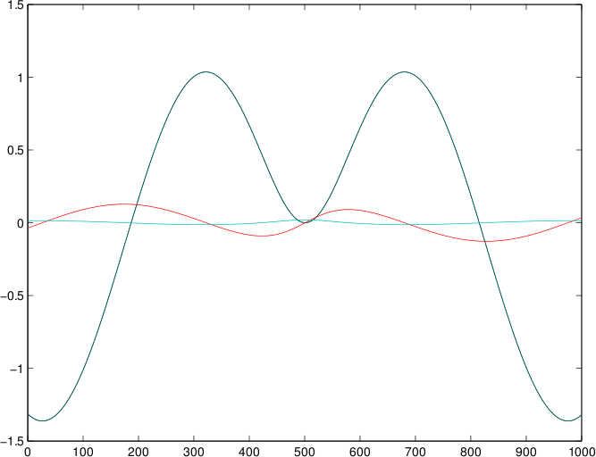
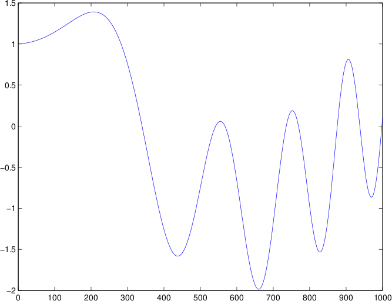
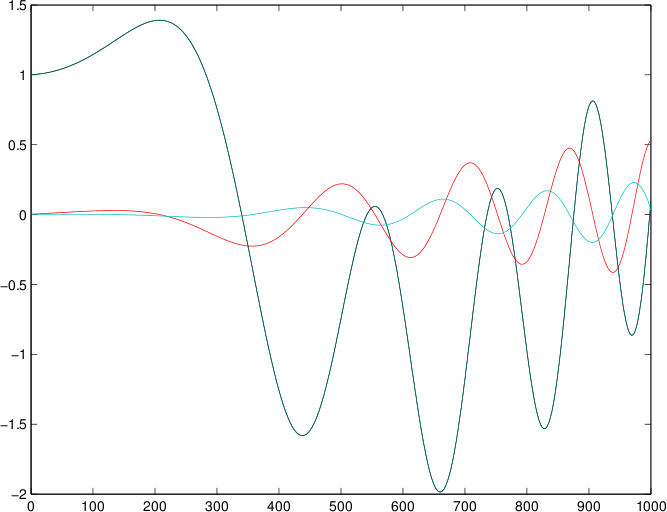
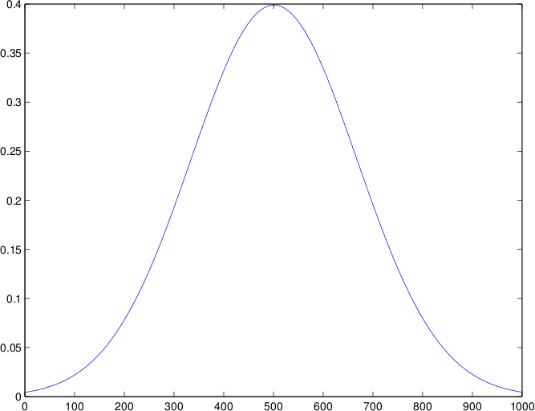
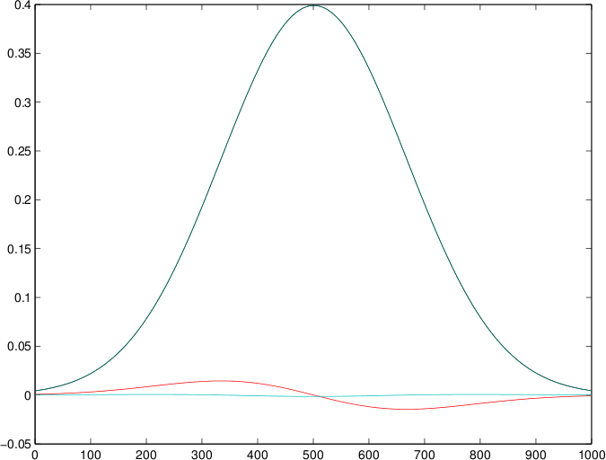
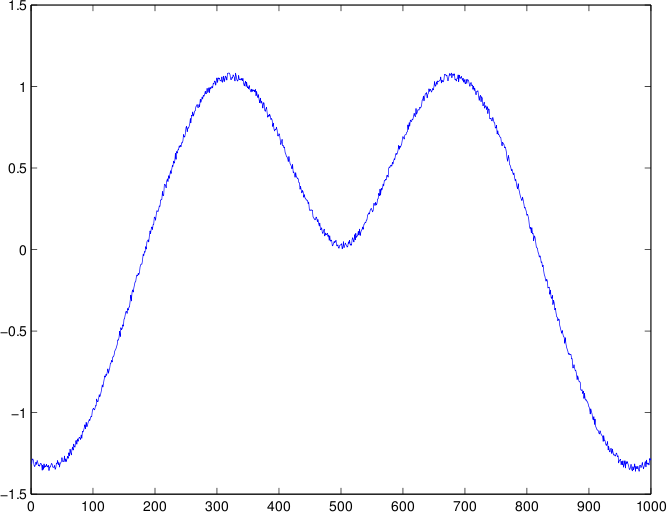
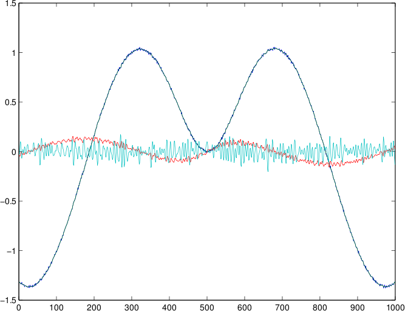
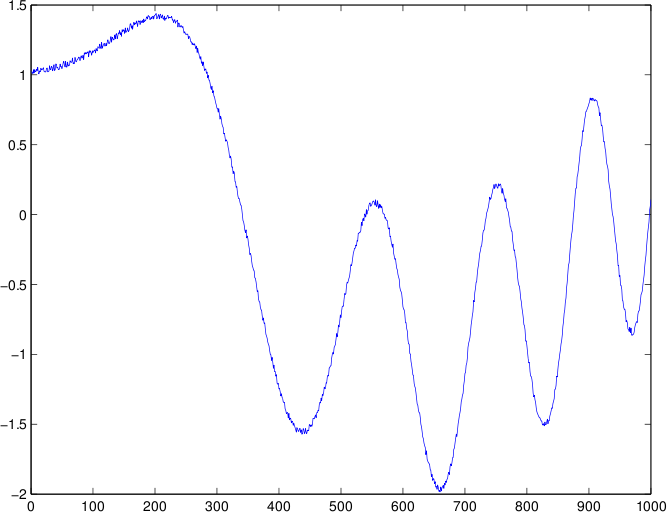
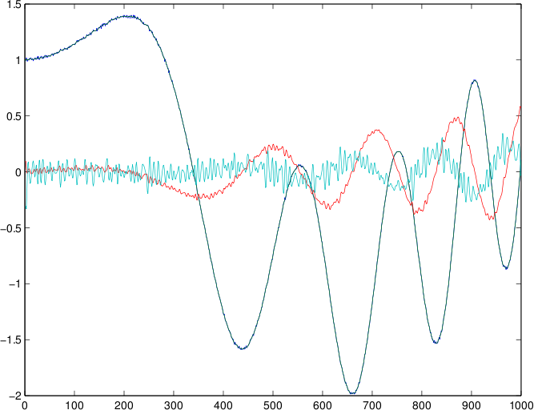

Write a program that reads a list of doubles from a file and computes the smoothed values as well as the smoothed first and second derivatives.
These are the functions you must make:
smooth(), that is provided two "double" arrays
and a integer size n. The first array, A, is the array with the
data; the second array, B, is "blank" (but the same size as the
first). The second array is filled with values from the first,
following this formula, for i between 2 and n-3 (inclusive):
B[i] = (A[i-2] + 2*A[i-1] + 4*A[i] + 2*A[i+1] +
A[i+2])/10.0
The formula should not be used when i equals 0, 1, n-2, or
n-1. For those values of i, B[i]=A[i].
In this smooth() function, array A should not be modified.
firstD() (approximate first derivative), that has
the same kind of parameters as smooth() (with the same names in
this description), and fills array B with values according to this
formula: B[i] = (A[i+1] - A[i-1])/0.2 for values of
i from 1 to n-2 (inclusive). When i=0 or
i=n-1, B[0]=B[1] and
B[n-1]=B[n-2] (these last two values must be computed
after you have computed all the others).Your program should follow these steps:
n. Create a "double" array of that size called vals
and save all the following values in into the array.smoothed and call the
function smooth() with vals and smoothed and n so that the array
smoothed will have the "smoothed" version of the numbers in vals.vals1D and call the
function firstD() with smoothed and vals1D and n so that the
array vals1D will have the "first derivative" of the smoothed
values.smoothed1D and call the
function smooth() with vals1D and smoothed1D and n so that the
array smoothed1D will have the "smoothed first derivative" of the
smoothed values.vals2D and call the
function firstD() with smoothed1D and vals2D and n so that
the array vals2D will have the "first derivative of the smoothed first
derivative" of the smoothed values.smoothed2D and call the
function smooth() with vals2D and smoothed2D and n so that the
array smoothed2D will have the "smoothed first derivative of the
smoothed first derivative" of the smoothed values.vals, the second column is
the array smoothed, the third column is the array smoothed1D, and
the fourth column is the array smoothed2D. Separate the columns
with a tab, and print the numbers with precision ten.matlab & to start Matlab. Within Matlab, type load outdata.txt
and then type plot(outdata) . You will need to do this step to
verify your results.Input file: a-8-input1.txt, output: a-8-outdata1.txt
Graph of input (note: to graph the input file, delete the first line in the file since that line is an integer indicating how many values are in the file; Matlab does not need that).
Graph of output:

Input file: a-8-input2.txt, output: a-8-outdata2.txt
Graph of input:

Graph of output:

Input file: a-8-input3.txt, output: a-8-outdata3.txt
Graph of input:

Graph of output:

Input file: a-8-input4.txt, output: a-8-outdata4.txt
Graph of input:

Graph of output:

Input file: a-8-input5.txt, output: a-8-outdata5.txt
Graph of input:

Graph of output:

#include <iostream> #include <fstream> using namespace std; void smooth(double A[], double B[], int n) { for(int i = 2; i <= (n-3); i++) { B[i] = (A[i-2] + 2*A[i-1] + 4*A[i] + 2*A[i+1] + A[i+2])/10.0; } B[0] = A[0]; B[1] = A[1]; B[n-2] = A[n-2]; B[n-1] = A[n-1]; } void firstD(double A[], double B[], int n) { for(int i = 1; i <= (n-2); i++) { B[i] = (A[i+1] - A[i-1])/0.2; } B[0] = B[1]; B[n-1] = B[n-2]; } int main() { string filename; cout << "Enter filename: "; cin >> filename; ifstream input; input.open(filename.c_str()); if(!input.is_open()) { cout << "Error opening input file." << endl; return -1; } ofstream output; output.open("outdata.txt"); if(!output.is_open()) { cout << "Error opening output file." << endl; return -1; } int n; input >> n; double vals[n]; for(int i = 0; i < n; i++) { input >> vals[i]; } double smoothed[n]; smooth(vals, smoothed, n); double vals1D[n]; firstD(smoothed, vals1D, n); double smoothed1D[n]; smooth(vals1D, smoothed1D, n); double vals2D[n]; firstD(smoothed1D, vals2D, n); double smoothed2D[n]; smooth(vals2D, smoothed2D, n); output.precision(10); output.setf(ios::fixed, ios::floatfield); for(int i = 0; i < n; i++) { output << vals[i] << "\t" << smoothed[i] << "\t" << smoothed1D[i] << "\t" << smoothed2D[i] << endl; } input.close(); output.close(); return 0; }
All writing (prose) and coding for every one of the programming assignments, labs, and quizzes is to be done individually. DO NOT LOOK AT OR COPY anyone else's writing or code. DO NOT SHARE your writing or code with anyone else. The only code you can copy is what you see in the book and what I provide to you (in class or on this website). If you are stuck on an assignment or lab, please visit me (or another TA) during office hours. Suspected cases of academic misconduct will be filed with the Committee of Academic Misconduct.